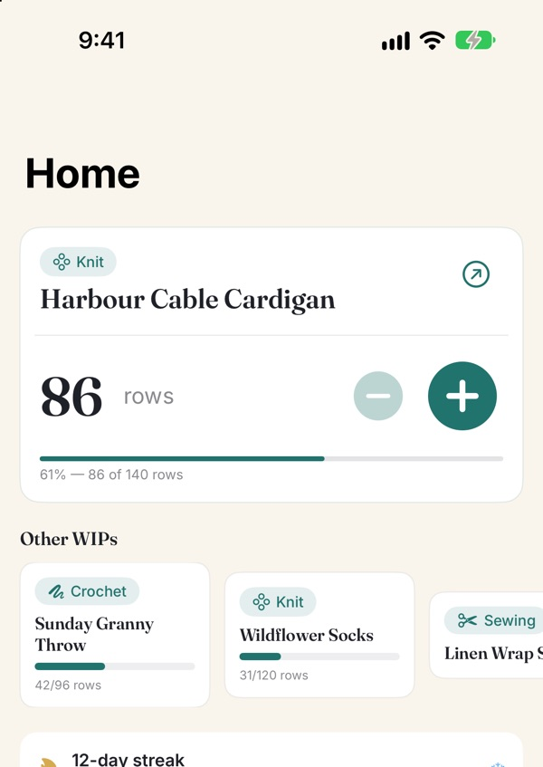
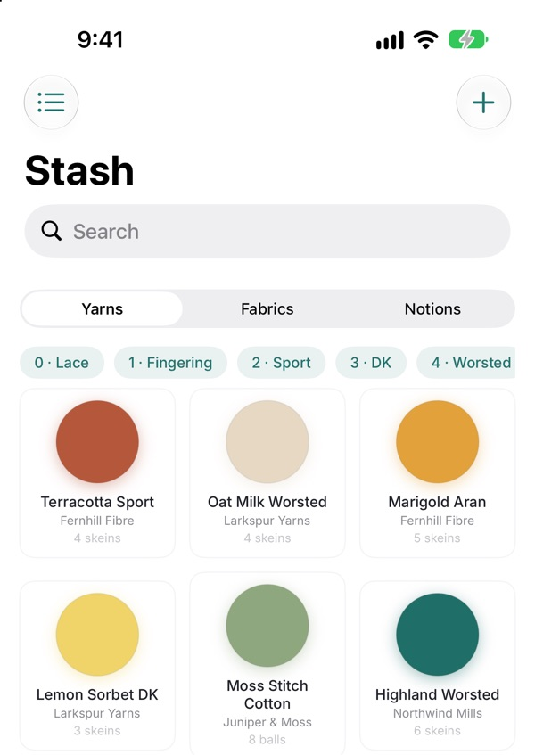
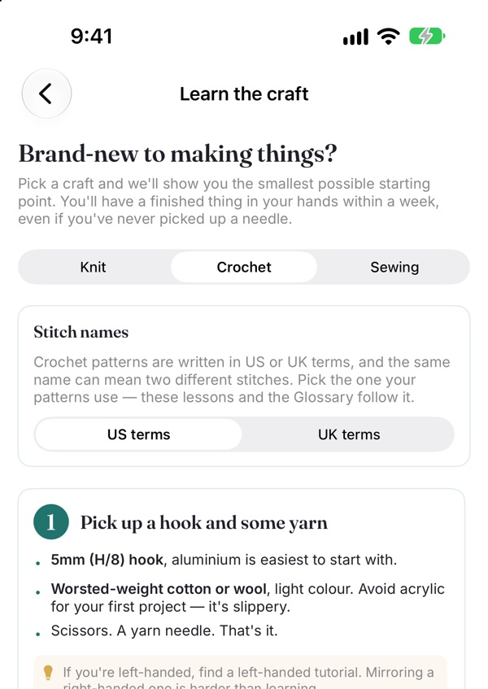

A calm row counter
for knitting and crochet
Count from your Lock Screen without unlocking, and pick up on your iPad where your iPhone left off. Your projects, yarn stash and patterns sync free through your own iCloud.
Free on iPhone and iPad · iOS 26 or later



What’s inside
Row counter, your way
A big +1 that opens to the project you’re working on. Count from the Lock Screen without unlocking, from a widget, or by asking Siri. Survives phone restarts.
Know your stash
Yarn, fabric, notions in one library. Point your camera at a yarn label to pick up details like weight and dye lot.
Pattern library
Attach the PDF and it reopens on the page you left. Per-pattern abbreviation glossary. See every project made from a pattern.
Calculators built in
Gauge, yardage, ball weight, WPI. The math you used to do on a notepad, now on your phone.
Made for beginners
Short lessons with videos. “Is this normal?” answers for the worries every new maker has. Starter shopping lists with free and recycled alternatives.
Private by design
No account to make. Your data lives on your device and in your own iCloud. No analytics, no ads, no tracking.
Not sure how much yarn to buy? Try the free yarn calculator
Made with respect.
Stashcraft doesn’t treat crafters as productivity machines. We respect resting projects. We celebrate cast-on as much as cast-off. We use words like “resting” instead of “abandoned”. We never call your data ours. We never shame a missed streak. And we’ll never run an ad.
Free to start. Pro when you’re ready.
Free
Up to 5 active projects with 5 photos each. The row counter everywhere, your stash, patterns, calculators, lessons and iCloud sync.
Pro
A row counter and highlighter inside your pattern PDFs. Unlimited projects and photos. Total stash value and project cost.
Prices in US dollars. The App Store shows the price in your currency.
- iPhone and iPad
- iCloud sync across devices
- Works fully offline
- No account required
- No ads, no analytics